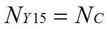
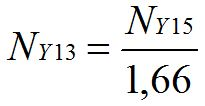
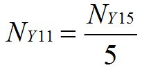
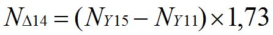
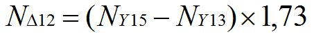
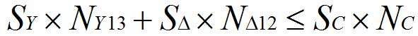
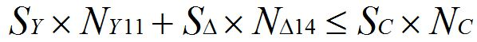

Перейти на главную страницу справочника.
Расчёт №2.
Расчёт одно-двухслойных совмещённых обмоток с последовательным соединением фаз, при q=5 и шаге обмотки Y у=15;13;11+13;11, Δ у=14;12.
| Прежде чем начинать расчёт совмещённых обмоток, выполните пересчёт обычной (старой) обмотки. 1. Соединение фаз в звезду. 2. Число параллельных ветвей а=1. (В совмещённой обмотке число параллельных ветвей будет а=1/1) 3. Проверить совпадение среднего шага старой и новой обмоток. При несовпадении, пересчитать старую обмотку на средний шаг новой. |
Записываем данные обычной (старой) обмотки.
| Sс | Сечение провода старой обмотки. |
| Nс | Количество витков в пазу старой обмотки. |
| Sc×Nc | Заполнение паза в старой обмотке. |
| Wс | Количество витков в фазе старой обмотки. |
Расчёт числа витков в секциях основной и совмещённой обмоток.
- Расчёт числа витков в секции основной обмотки Y с шагом у=15. NY15 - число витков в секции с шагом у=15 основной обмотки. NС - число витков в пазу старой обмотки.

- Расчёт числа витков в секции основной обмотки Y с шагом у=13. NY13 - число витков в секции с шагом у=13 основной обмотки. NY15 - число витков в секции с шагом у=15 основной обмотки.

- Расчёт числа витков в секции основной обмотки Y с шагом у=11. NY11 - число витков в секции с шагом у=11 основной обмотки. NY15 - число витков в секции с шагом у=15 основной обмотки.

- Расчёт числа витков в секции совмещённой обмотки Δ с шагом у=14. NΔ14 - число витков в секции с шагом у=14 совмещённой обмотки. NY15 - число витков в секции с шагом у=15 основной обмотки. NY11 - число витков в секции с шагом у=11 основной обмотки.

- Расчёт числа витков в секции совмещённой обмотки Δ с шагом у=12. NΔ12 - число витков в секции с шагом у=12 совмещённой обмотки. NY15 - число витков в секции с шагом у=15 основной обмотки. NY13 - число витков в секции с шагом у=13 основной обмотки.

Расчёт сечения провода основной и совмещённой обмоток.
- Расчёт сечения провода в основной обмотке. SY - сечение провода основной обмотки. Sс - сечение провода старой обмотки.

- Расчёт сечения провода в совмещённой обмотке. SΔ - сечение провода совмещённой обмотки. SY - сечение провода основной обмотки.

Проверить заполнение паза новой обмоткой.
- Проверить заполнение паза новой обмоткой в двухслойных пазах.

- Проверить заполнение паза новой обмоткой в двухслойных пазах.
